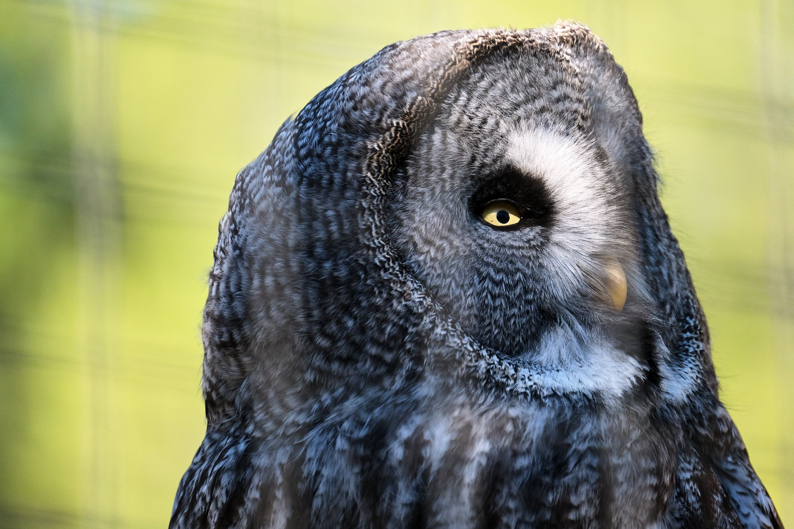
Parc animalier (11) - ISO 800 1/1000 s f/5.6 400mm - FUJIFILM X-S10
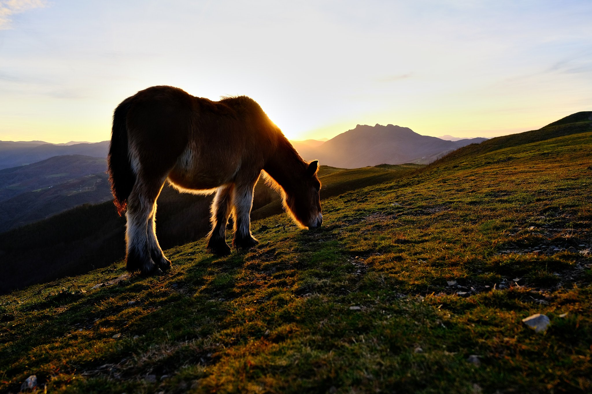
Pyrénées (64) - ISO 320 1/420 s f/4 18mm - FUJIFILM X-S10
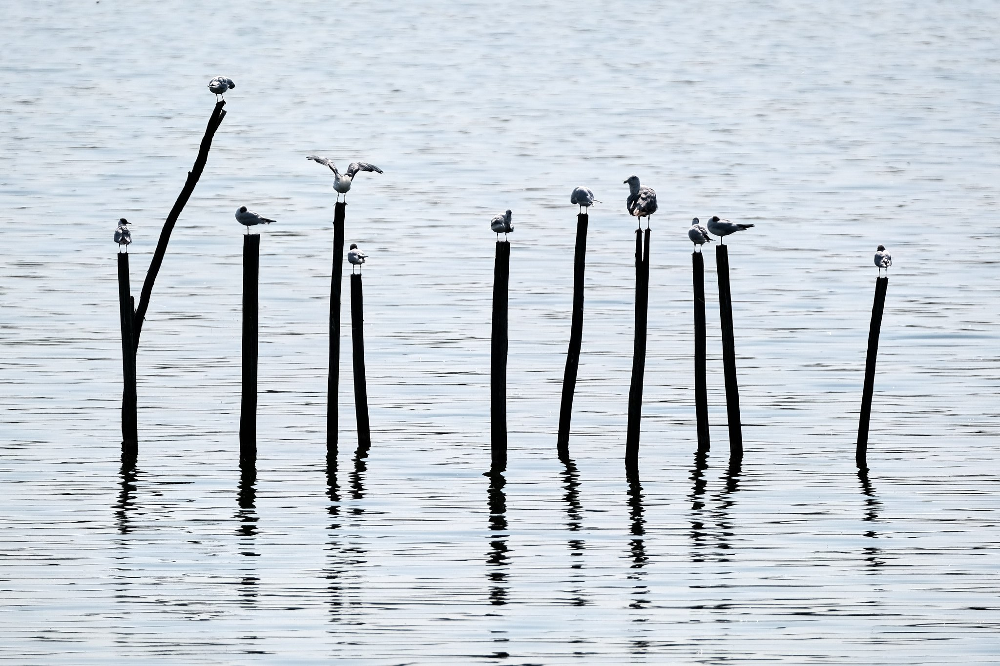
Landes (40) - ISO 160 1/1600 s f/5.6 400mm - FUJIFILM X-S10
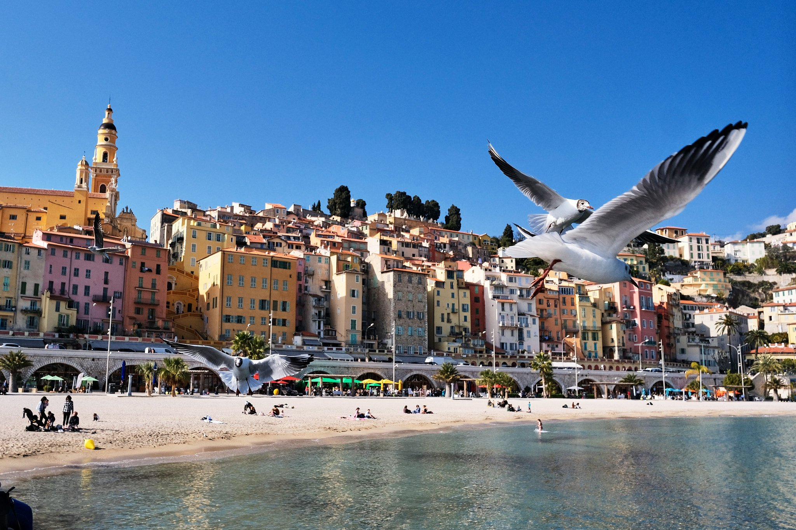
Menton (06) - ISO 320 1/8000 s f/5.6 18mm - FUJIFILM X-S10
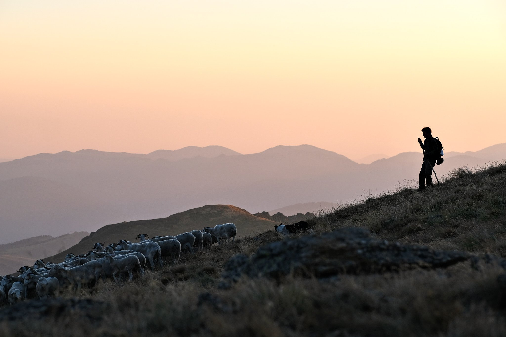
Ariège (09) - ISO 320 1/350 s f/3.6 90mm - FUJIFILM X-S10
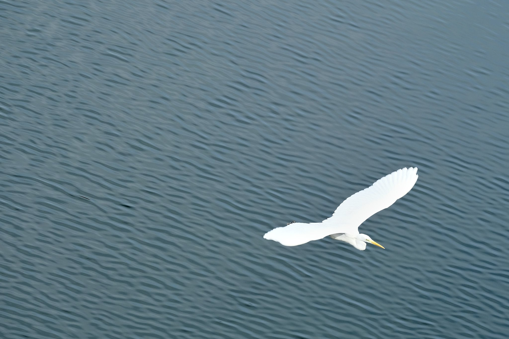
Toulouse (31) - ISO 320 1/340 s f/5.6 153mm - FUJIFILM X-S10
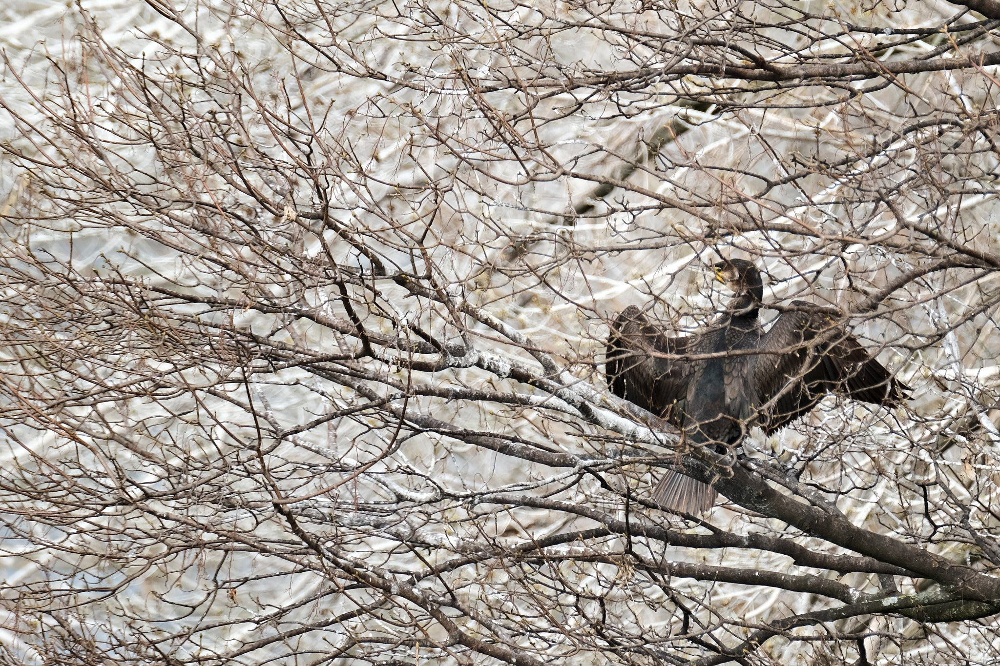
Toulouse (31) - ISO 500 1/600 s f/5.6 400mm - FUJIFILM X-S10
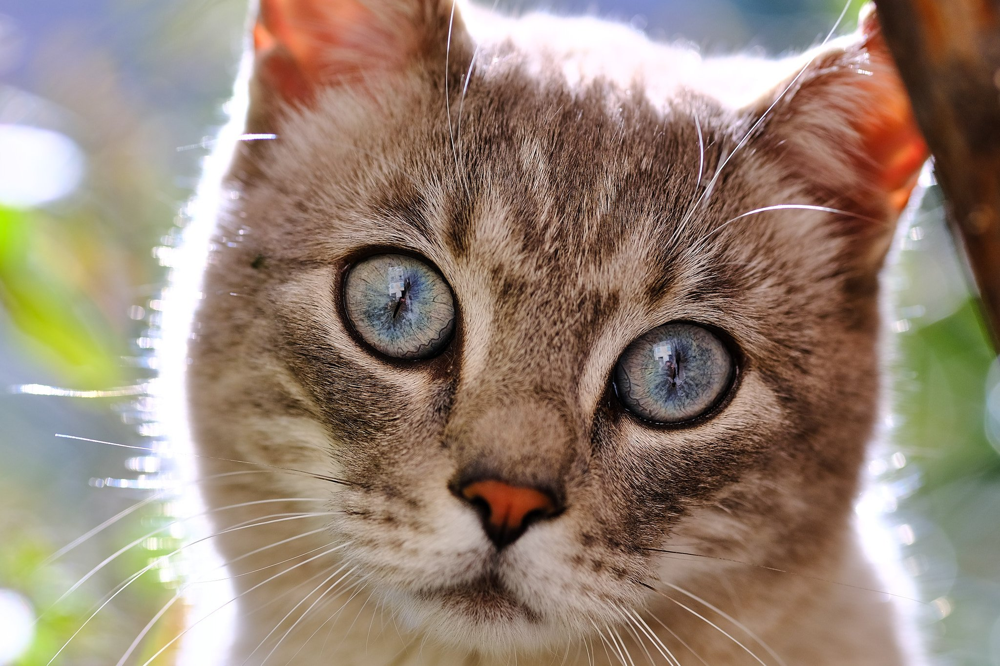
Sospel (06) - ISO 320 1/400 s f/2.5 90mm - FUJIFILM X-S10
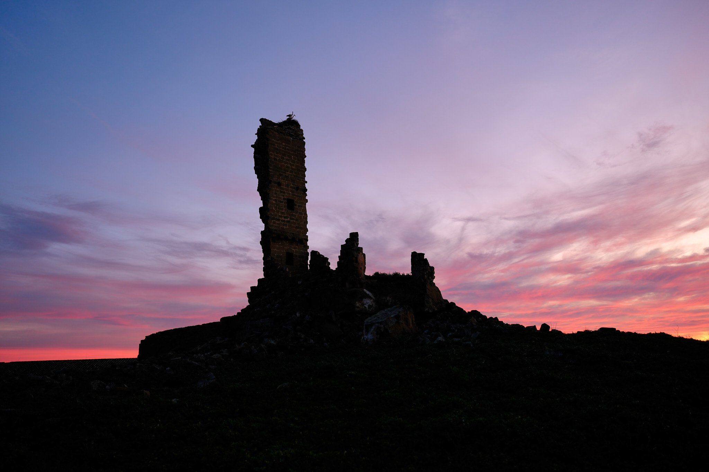
Espagne - ISO 125 1/25 s f/1.4 18mm - FUJIFILM XT-5
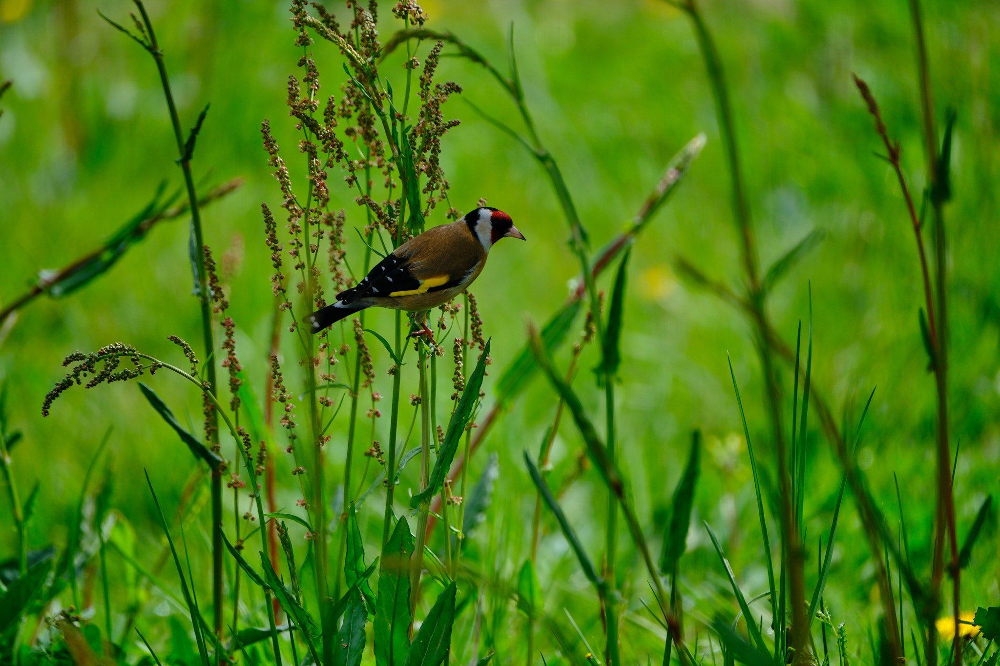
Bressols (82)
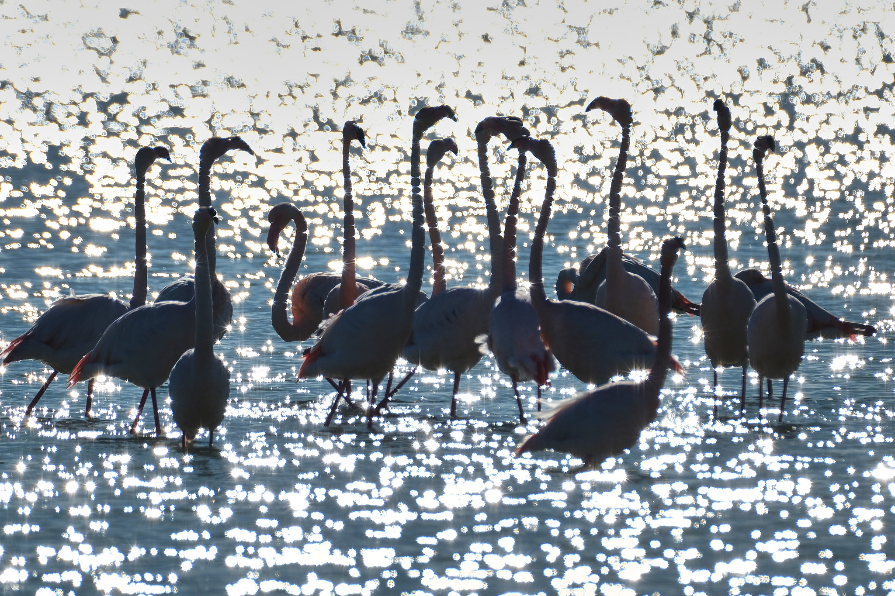
Leucate - ISO 125 1/2900 s f/6.4 400mm - FUJIFILM X-T5
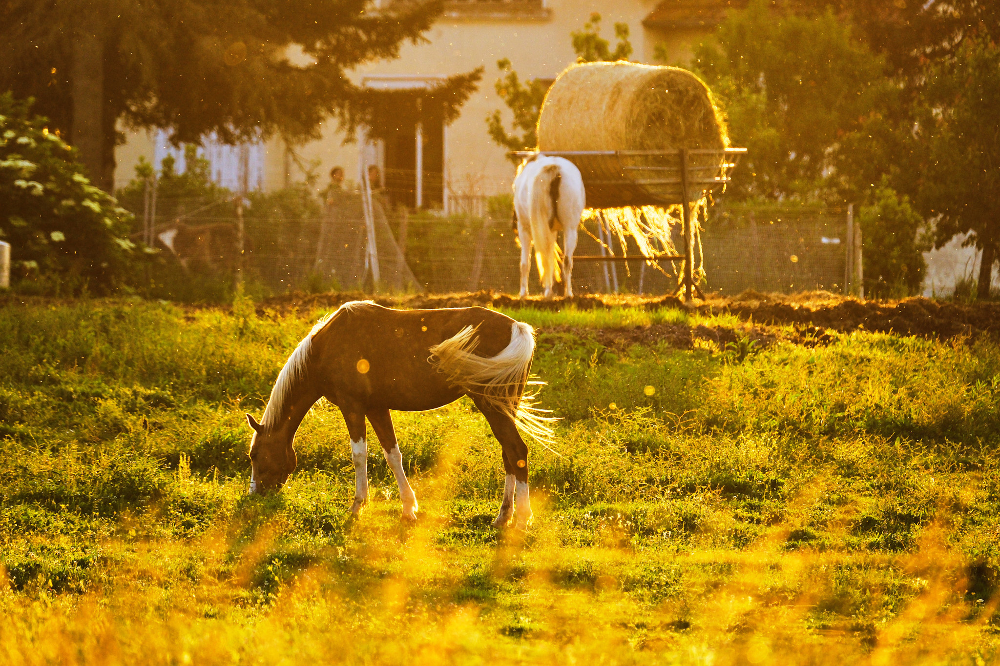
Bruniquel (82) - ISO 250 1/500 s f/5.6 400mm - FUJIFILM XT-5
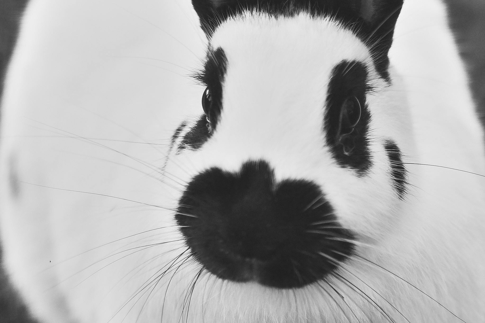
Alsace - ISO 400 1/125 s f/2 90mm - FUJIFILM XT-5
❮
 ❯
❯